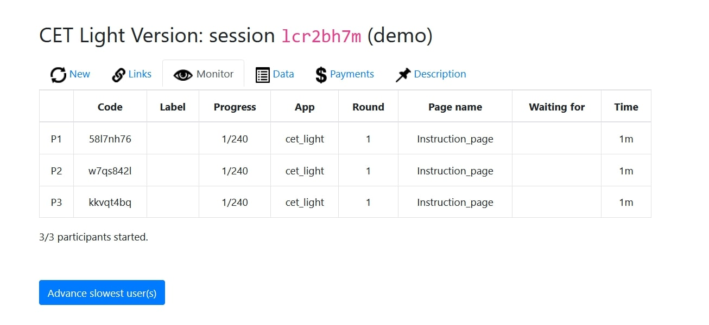

Note
Source Code: All source code described on this website can simply be copied into your oTree project from the code block at the bottom of this section.
Step 5: Calling the function¶
This is the last step of integrating the software-module in your oTree project. You need to add the following things in your pages.py file.
Adding Timeouts¶
The email should be sent once all players have finished the experiment. Since it’s impossible to guarantee that every single player finishes the experiment you have to account for players that have dropped out and might not finish the experiment on their own. One way to do this is to manually force a timeout by clicking the “Advance slowest participants” button in oTree’s admin interface. Like this:
However, this can also be done more elegantly by adding a Timeout to every single page of your experiment. By adding a timeout to every Page class in your pages.py file you don’t have to manually advance the players and you can still make sure that every player finishes the experiment. Add the following code to all your page classes:
class Page1(Page):
#-------------------------
#ALL YOUR OTHER CODE HERE
#-------------------------
timeout_seconds = XX # add amount of seconds until timeout happens
Before Next Page¶
Lastly, the following lines have to be added to the last page of your experiment. All code within
the before_next_page() function is executed once the player finishes the last page of your
experiment. Click here for additional
information. The code below does the following:
Once a player finishes the experiment the
is_finishedfield of the player is set toTrueThe
set_all_players_finished()function checks if every player has finished the experiment.Once the last player finishes and therefore all players have finished the experiment, the
send_payment_mail()function is called and the email is sent.
This is an example of possible parameters for the function:
- Mail parameters:
The
sum_saved_emissionfield is the total weight of CO2 emission that was saved by participants. Add your own variable here.The unit of the weight is lbs.
The name of the experiment is Carbon Emission Task.
The name of the recipient is John Doe.
the recipient’s email address is john.doe@cet.com. (Multiple addresses have to be specified in a list e.g. [“john.doe@cet.com”, “jane.doe@cet.com”].
By adding the following code to the last page of your experiment, you successfully integrated the tool for automatic carbon offsetting in your oTree project.
class LAST_PAGE(Page):
#-------------------------
#ALL YOUR OTHER CODE HERE
#-------------------------
def before_next_page(self):
#Is Finished fields and functions
self.player.is_finished = True
self.subsession.set_all_players_finished()
# All finished check and send mail
if self.subsession.all_players_finished:
self.subsession.send_payment_mail(self.subsession.sum_saved_emission,
"lbs",
"Carbon Emission Task",
"John Doe",
"john.doe@cet.com")